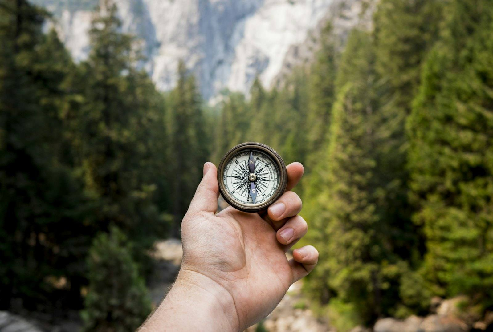
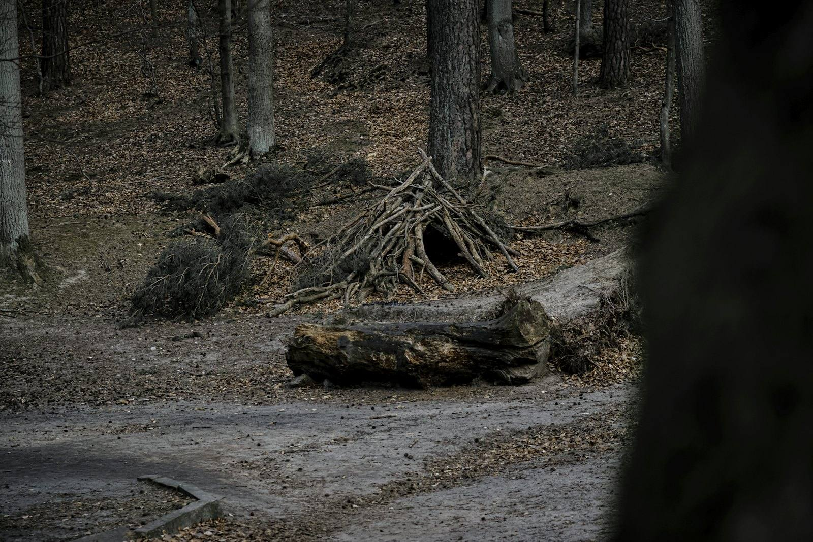

Speldozen en draaiboeken, landelijk
Eén buitenactiviteit, kant-en-klaar, waar je ook zit.
De bosmiddagen draai ik in de Gooi en Vechtstreek. Zit je verder weg, of wil je eerst één activiteit proberen voordat je aan een abonnement denkt? Dan bestel je hem los: als speldoos met het materiaal erbij, of als digitaal draaiboek.

Twee vormen
Met materiaal, of alleen het draaiboek
De speldoos
Het draaiboek en het materiaal voor één activiteit, in een doos. Je team hoeft niets uit te zoeken of aan te schaffen.
Het digitale draaiboek
Hetzelfde draaiboek, als bestand. Het materiaal regel je zelf met de materiaallijst. Handig als je de meeste spullen al op de BSO hebt liggen.
Inhoud
Wat er in elk draaiboek staat
01
Een tijdlijn
Tot op de minuut, van aankomst tot afsluiting.
02
Een materiaallijst
Wat je nodig hebt en hoeveel, tot het markeerlint toe.
03
Een veiligheidsprotocol
Welke risico's erin zitten en welke afspraken je met de kinderen maakt.
04
Een plan B
Voor als het regent of de groep onrustig wordt.
Elk draaiboek komt uit een middag die ik zelf heb gedraaid. Wat daar misging, staat er ook in.



Aanbod
Welke activiteiten er komen
[Welke activiteiten als speldoos en als draaiboek te bestellen zijn, volgt.] Wil je alvast zien hoe ik werk, kijk dan bij de tien programma's.
Eerst proeven
Eerst zien hoe een draaiboek van mij eruitziet?
Meld je aan voor de nieuwsbrief. Je krijgt meteen het gratis draaiboek [titel volgt], en daarna elke twee weken één uitgewerkte activiteit.